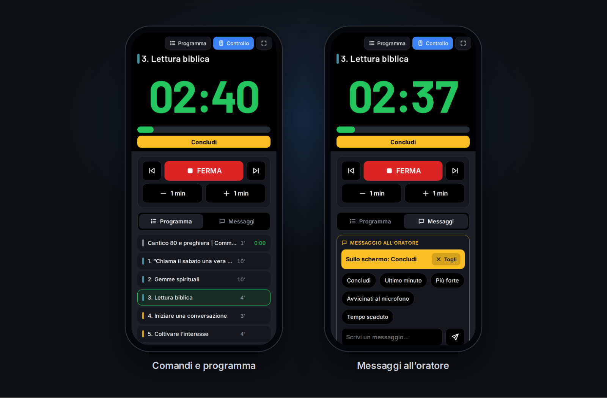

Lo schema della settimana arriva da solo da wol.jw.org, il timer va sullo schermo che scegli, leggibile anche dal fondo della sala. E chi vuole lo segue, o lo comanda, dal telefono.
Questa è una copia funzionante dello schermo del timer. Avvialo, cambia stile, manda un messaggio: in sala funziona esattamente così.
Tesori della Parola di Dio
3. Lettura biblica
04:00
Dopo: 4. Iniziare una conversazione19:42
Timer
Layout
Tema
Messaggio all'oratore
Sul monitor in sala le cifre occupano circa il 70% dell'altezza: su un 22" sono alte circa 10 cm.
Funzionalità
Tutto quello che serve. Niente di più.
Pensato per chi sta all'acustica: pochi clic durante l'adunanza, nessuna sorpresa.
Schemi automatici da wol.jw.org
Parti, durate e cantici dell'infrasettimanale e lo studio Torre di Guardia arrivano da soli. Puoi scaricare in un colpo tutte le settimane già pubblicate: quelle che hai modificato a mano restano come le hai lasciate.
1. Continuiamo ad aiutarci gli uni gli altri10′
2. Gemme spirituali10′
4. Iniziare una conversazione3′
8. Studio biblico di congregazione30′
Leggibile a 20 metri
Cifre enormi sul monitor che scegli, verde, poi giallo nell'ultimo minuto, poi rosso. Tema scuro o chiaro, layout classico, clessidra o solo cifre.
Dal telefono
Il timer in tempo reale su qualsiasi dispositivo della rete. Con un QR e un PIN lo comandi anche: avvio, parti, minuti, messaggi.
Messaggi all'oratore
"Concludi", "Più forte"… in una fascia gialla ben visibile. Frasi pronte personalizzabili, oppure testo libero. Se non servono, si spengono.
Modalità mini
Un solo monitor? Una finestrella sempre in primo piano con il tempo grande, i comandi essenziali e il bordo che diventa rosso allo sforamento.
Tutto modificabile
Editor con trascinamento, durate rapide e sezioni colorate. Un pulsante adatta la settimana della visita del sorvegliante.
Countdown e studio adattivo
Qualche minuto prima dell'inizio lo schermo mostra «L'adunanza inizia tra…». Se sei in ritardo, lo studio può accorciarsi da solo per finire in orario.
Si riprende dopo un imprevisto
Se il PC si riavvia durante l'adunanza, alla riapertura TimerSala riparte dalla parte in corso, con i tempi giusti.
In rete
Il timer in tasca a chi serve
Il presidente sul podio, l'addetto in fondo alla sala, il tablet sul leggio: tutti vedono lo stesso timer, in tempo reale.
1
Premi «Collega telefono»Il controller mostra un codice QR.
2
Inquadralo con la fotocameraBasta essere sulla stessa rete Wi‑Fi del PC.
3
Guarda o comandaIl codice di controllo, protetto da PIN, aggiunge avvio, parti e messaggi.

Schermate
Fatto per essere usato
Un controller compatto per il banco dell'acustica, un editor chiaro, impostazioni ordinate.
Controller, modalità mini, editor dello schema e impostazioni.Tempo regolare, ultimo minuto, sforamento con messaggio, clessidra, tema chiaro, countdown.Adunanze, Schermo, Messaggi e Rete.
Per iniziare
Tre passi, e sei pronto
Scarica
Un solo file, TimerSala.exe. Niente installazione: copialo dove vuoi e avvialo.
Consenti la rete
Alla prima apertura Windows chiede il permesso per le reti private: serve per vedere il timer dagli altri dispositivi.
Scegli lo schermo
Nelle impostazioni indica il monitor del timer e gli orari delle adunanze. Lo schema si scarica da solo.
Domande
Domande frequenti
Costa qualcosa? Serve un account?
No. TimerSala è gratuito, non chiede registrazioni e non invia dati a nessuno: tutto resta sul tuo PC.
Windows dice «PC protetto». È normale?
Sì: l'eseguibile non è firmato digitalmente. Fai clic su Ulteriori informazioni → Esegui comunque. Succede solo la prima volta.
E se in sala non c'è internet?
Scarica in anticipo tutte le prossime settimane con un clic: gli schemi restano salvati e il timer funziona senza connessione. Il controllo dal telefono usa solo la rete locale.
Posso cambiare lo schema scaricato?
Certo: titoli, durate, ordine, cantici. C'è anche un pulsante per la settimana della visita del sorvegliante. Le settimane modificate a mano non vengono sovrascritte dai download successivi.
Ho un solo monitor: posso usarlo lo stesso?
Sì. La modalità mini riduce il controller a una finestrella sempre in primo piano, e il timer si può seguire anche da un tablet o da un telefono.
Chi può comandare il timer dal telefono?
Solo chi ha il PIN. Il codice QR di controllo, che lo contiene già, resta nascosto finché non lo mostri. Dopo 5 tentativi errati il controllo si blocca per un minuto.